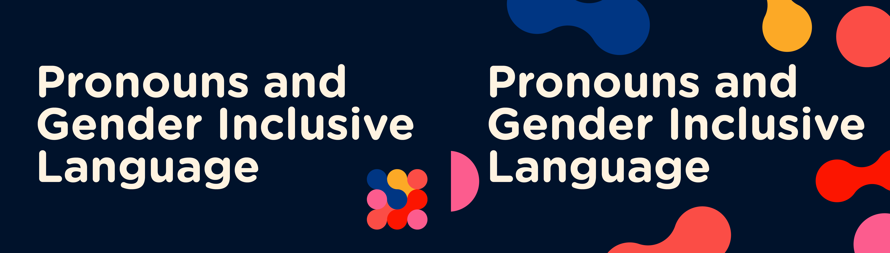
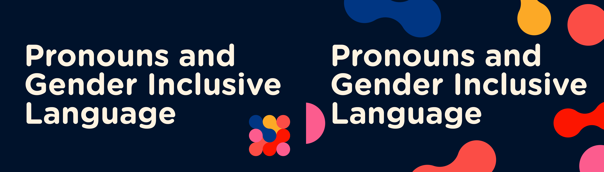
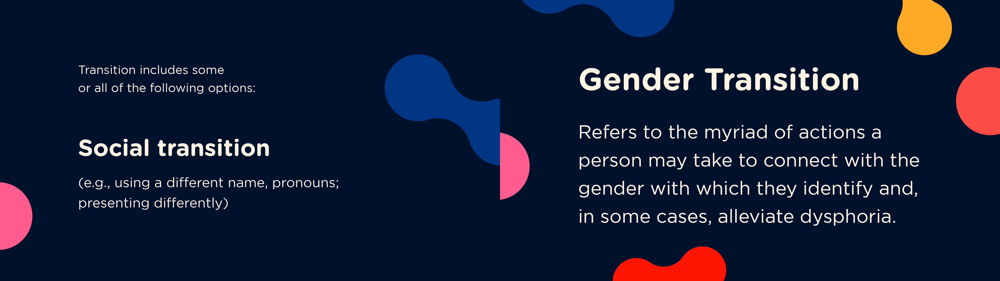
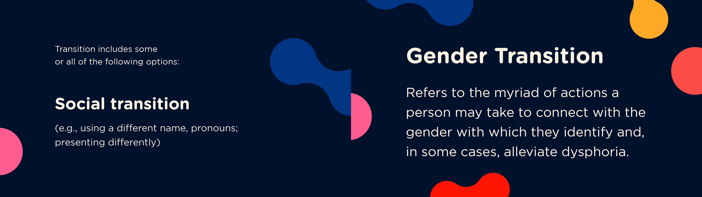

Pronouns & Gender Inclusive Language
October 2022
Lead Designer
Visual Identity
This was a project for The LGBTQ+ Center at NYU
Pronouns and Gender Inclusive Language (PGIL) is an educational video series created by the NYU’s LGBTQ+ Center targeted for both the NYU community and the general public. It’s visual identity is characterized by a pattern of interlocking clusters that, when in motion, sway between interlocked and floating states.
The design aims to reflect the concept of togetherness as the once losely floating clusters come together in an interlocking pattern. Yet, it also highlights individualism, as the clusters are all different colors and are capable of floating independently.
 

 
